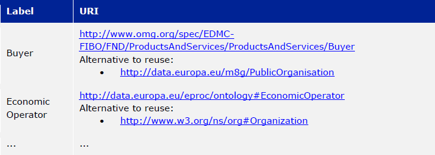

Specification of the process and methodology to develop the eProcurement Ontology
- 1. INTRODUCTION
- 2. PROCESS AND METHODOLOGY
- 3. EXAMPLE OF 3 USE CASES AND INFORMATION REQUIREMENTS
- 4. NAMING AND IDENTIFIER CONVENTIONS
- 5. CONCEPTUAL MODEL
- 5.1. Classes
- 5.2. Properties and relationships
- 5.2.1. Call For Tender
- 5.2.2. Procurement Criterion
- 5.2.3. Tender
- 5.2.4. Contract Award Notice
- 5.2.5. Contract
- 5.2.6. Product Or Service Or Work
- 5.2.7. Specification
- 5.2.8. Classification
- 5.2.9. Procuring Entity
- 5.2.10. Buyer
- 5.2.11. Contracting Authority
- 5.2.12. Public undertaking
- 5.2.13. Other Contracting Entity
- 5.2.14. Economic Operator
- 5.2.15. Country
- 5.2.16. Invoice
- 5.2.17. Evidence
- 5.2.18. Monetary Value
- 5.2.19. Currency
- 5.2.20. Payment
- 5.3. Additional classes, properties and definitions
- 6. MAPPING OF THE CONCEPTUAL DATA MODEL TO OWL
- 7. STATEMENT OF CONFORMITY
- 8. LESSONS LEARNED
- 8.1. Lessons related to the definition of use cases
- 8.2. Lessons related to the definition of requirements and identification of classes, properties and relationships
- 8.3. Lessons in finding related elements in existing solutions
- 8.4. Lessons in developing the conceptual model
- 8.5. Lessons in defining the OWL ontology
- 9. ACKNOWLEDGEMENTS
- 10. Annex I TEMPLATES
- 11. Annex III LIST OF GITHUB ISSUES
- 12. Annex IV OWL EXTRACT
- 13. List of Tables
- 14. List of Figures
Document Metadata
Date |
2017-08-03 |
Status |
Accepted |
Version |
1.0 |
Authors |
Makx Dekkers - AMI Consult Emidio Stani - PwC EU Services Brecht Wyns - PwC EU Services Florian Barthélemy - PwC EU Services |
Reviewed by |
Natalie Muric - Publications Office of the European Union Nikolaos Loutas - PwC EU Services |
Approved by |
Natalie Muric - Publications Office of the European Union |
This report was prepared for the Publications Office of the European Union by: PwC EU Services
Disclaimer:
The views expressed in this report are purely those of the authors and may not, in any circumstances, be interpreted as stating an official position of the European Commission. The European Commission does not guarantee the accuracy of the information included in this study, nor does it accept any responsibility for any use thereof. Reference herein to any specific products, specifications, process, or service by trade name, trademark, manufacturer, or otherwise, does not necessarily constitute or imply its endorsement, recommendation, or favouring by the European Commission. All care has been taken by the author to ensure that s/he has obtained, where necessary, permission to use any parts of manuscripts including illustrations, maps, and graphs, on which intellectual property rights already exist from the titular holder(s) of such rights or from her/his or their legal representative.
1. INTRODUCTION
This report is the result of preliminary work on the specification of an e-procurement ontology commissioned by the Publications Office of the EU. The work was performed by PwC together with a working group of stakeholders in the period between December 2016 and May 2017. The report acts as a first draft of the specification of the ontology based on a limited number of use cases as well as a starting point for the further development of the ontology by the working group in 2017 and 2018.
1.1. Context and problem statement
Procurement data has been identified as data with a high reuse potential. Following the paradigm of "data as a service", making this data available in machine-readable formats is required in order to maximise its reuse. Given the increasing importance of data standards for e-procurement, a number of initiatives driven by the public sector, industry, and academia have been started in recent years. Some have grown organically, while others are the result of standardisation work. The vocabularies and the semantics that they introduce, the phases of public procurement that they cover, and the technologies that they use, all differ. These differences hamper data interoperability and reuse. This creates the need for a common data standard for publishing procurement data, hence allowing data from different sources to be easily accessed and linked, and consequently reused.
1.2. Proposed solution
The objective of the e-procurement ontology is to act as a common standard on the conceptual level, based on consensus by the main stakeholders and designed to encompass the major requirements of the e-procurement process in conformance with the Directives 2014/23/EU2, 2014/24/EU3, 2014/25/EU4 and 2014/55/EU5.
1.3. Scope
The work on the development of the e-procurement ontology followed work in 2016 that led to a report, the D04.07 Report on policy support for e-procurement: e-procurement ontology, dated 20 September 20166, which is referred to in this document as the landscaping report. In the current preliminary phase, covered by these specifications and the project charter, an initial version of the ontology and the underlying conceptual model is developed for three use cases. Using these three uses cases as examples, the specifications document shows step-by step how the ontology is to be developed and how the problems mentioned above are to be overcome. The specification shows the conceptual model (see Figure 4: Conceptual data model of this document) and its presentation in OWL (of which an extract is available in Annex IV). Taking into consideration the document “Process and methodology for developing semantic agreements”, the work identifies and gives examples of each step of the process for creating the e-procurement ontology, clearly specifying the roles of the different actors and the input required from them within the timeline of creating the ontology.
2. PROCESS AND METHODOLOGY
The approach towards the development of the e-procurement Ontology is based on the ISA process and methodology for developing Core Vocabularies9, which provides guidance in two domains. First, the process describes how consensus is reached among stakeholders and domain experts so that the ontology meets its goals. Second, the methodology describes how the ontology is specified following best practices for selecting, reusing, developing and presenting concepts. In case amendments to the ontology are requested after its publication, the change management, release and publication process for structural metadata specifications developed by the ISA Programme10 should be followed. An earlier version of the process and methodology in the work to develop the e-procurement ontology methodology was presented in the landscaping report11.
2.1. Process
The process of developing the initial ontology involves several steps that lead to the establishment of a Working Group that will be responsible for the development of the complete ontology. Table 1 lists the steps from inception of the work until the publication of the initial specification.
Process Reaching consensus |
1. Identify stakeholders (Publications Office and PwC) 2. Identify chair(s) (Publications Office) 3. Identify editor(s) (Publications Office) 4. Form working group (Publications Office) Identify review group (Publications Office) 5. Verify and secure IPR12 (Intellectual property rights): coordinate the signing of the ISA contributor agreement (PwC) 6. Establish working environment and culture (PwC) 7. Develop first draft of the specification with an initial ontology and a draft Project Charter (PwC) 8. Present the draft specification and Project Charter in a Working Group meeting (PwC) 9. Further develop draft specification and Project Charter (PwC in collaboration with Working Group) 10. Finalise draft specification and Project Charter (PwC) |
The process to be used by the Working Group in the development of the complete ontology is described in the Project Charter13, an accompanying document to this report. In this report, the following meanings are attributed to the terms in bold, as described in the e-Government Core Vocabularies Handbook14:
An element is a class, a property, or an association. Classes are instantiated into instances (individuals) representing a real-world physical or conceptual thing. Classes are used to express facts about the generic characteristics of an individual instance. For example, the fact that an individual 'Gotlobb Frege is a (instance of the class) Person'. Properties or associations are used to construct facts about individuals. The property 'Family name' can be used in the fact 'Frege is the family name of Gotlobb Frege'.
2.2. Methodology
The methodology for the development of the e-procurement ontology is based on the methodology described in the article Ontology Development 101: A Guide to Creating Your First Ontology, by Natalya F. Noy and Deborah L. McGuinness15. The methodology proposed includes three steps. These are shown in Figure 1 with the tasks that constitute each of the steps.
2.2.1. Step 1: Define use cases
A use case is a description of actions and event steps that explain the interaction between actors and a system. In light of the e-procurement ontology, the use cases describe situations that the ontology should be able to support. The working group will use the use cases for two purposes:
-
To understand how the ontology will be used in the future; and
-
As inspiration to identify key concepts and relationships, based on which a conceptual data model will be built.
The step consists of 2 sub-steps:
Sub-step 1 |
Select and update use cases from the landscaping study The landscaping study introduced 12 use cases for the e-procurement ontology. The working group should review these use cases, select the ones that should be in scope and propose updates to the use cases if they deem it necessary. Selected use cases should be described following the template in Annex I. Further use cases may be added. |
Sub-step 2 |
Define additional use cases that the e-procurement ontology should cover The working group members should propose and agree on new use cases where they feel a need is not covered by the selected use cases or from the sum of more than one use case. New use cases should be described by following the template in Annex I. |
2.2.2. Step 2: Derive information requirements from the use cases
In order to develop a conceptual data model, which defines the domain and scope of the ontology, information requirements first need to be elicited. Information requirements describe the concepts and relationships that need to be defined in the conceptual data model in order to support the use cases.
This step is split into three tasks:
Task 2.1 |
Highlight the elements that are mentioned in the use case This can be done by marking the important nouns (documents, agents, criteria, item descriptions, places, time periods, etc.) and verbs in the description of the flow (for the flow of a use case see for example 3.2 Use case 2) of the use cases. There will be nouns that are clearly not relevant, but all other nouns should be marked for using in the next step. Particular attention should be paid to underline only elements which are related to the public procurement process. Example: In partnership with CustomSteel, Bob prepares the tender and sends it to the contracting authority, awaiting a positive outcome and looking forward to reading his company’s name in the contract award notice. In this example, elements such as Bob were not underlined since they do not relate to the public procurement process which represents the scope of this ontology. |
Task 2.2 |
Generalise the elements from individuals to concepts Many of the elements identified in the previous step will be specific, e.g. a company name or a specific item that is procured. As such, they are examples of a more general class of elements or concepts. Some of the elements will map unto the same general concept class, some others will be clearly separate. It is important to generalise to the appropriate level, taking into account the role that an entity plays in the procurement process. For example, both contracting authorities and economic operators could be generalised to a general class Organisation, but as they play different roles, the generalisation should distinguish the classes Contracting Authority and Economic Operator. Example: CustomSteel economic operator _prepares / sends → submits tender → tender contracting authority → contracting authority reading → is informed (data whether or not a contract is being read and by whom, is not needed to support the use case) company’s name → economic operator name contract award notice → contract award notice |
Task 2.3 |
Enter the concepts in the requirement template For each of the concepts identified in the previous step, the information indicated in the information requirements template is provided. Each of the information requirements should be clearly linked to one or more use cases. Moreover, the information requirements should indicate the priority of the requirement, e.g. by indication whether a requirement must or could be included in the ontology, or whether it would simply be nice to have. “Nice to have” does not mean that the requirement will be neglected, but that it will not be given priority when creating the conceptual data model. |
| Information requirement | Description | Related Use Case |
|---|---|---|
IR01 |
The concept of economic operator SHOULD be defined. |
UC1, UC2, UC3 |
IR02 |
The concept of contract award notice SHOULD be defined. |
UC2 |
… |
… |
… |
The outcome of step 2 is documented for the three use cases defined as part of this work in section 3.4.
2.2.3. Step 3: Develop a conceptual data model
Starting from the information requirements defined in step 2, a conceptual data model will be defined and agreed upon with the working group. The conceptual data model will serve as input for the creation of the ontology. This step aims to identify and describe the elements with their attributes and relationships.
The conceptual data model is the key tool to reach semantic agreements between Working Group members, regardless of whether their background is business or IT. The development of the conceptual data model of the e-procurement ontology will consist of several sub-steps:
Step 3.1 |
Enumerate important concepts based on information requirements As a first step towards creating a conceptual data model, the concepts that are directly resulting from the information requirements should be enumerated in a list of the classes and properties or in a UML diagram. Example: .Figure 2: example - important classes, properties and relationships |
Step 3.2 |
Identify missing classes, properties and relationships The list of classes, properties and relationships directly resulting from information requirements, identified in step 2.1, will most probably not be complete. Classes might be “floating”, meaning that a relationship between this class and other classes seem to be missing at first sight, or some classes might be missing. Since use cases are often written with a focus on the business processes or specific activities, the UML or list of classes, properties and relationships resulting from the previous step will probably not represent all those that are needed for a comprehensive ontology. In order to close the gaps and refine the classes, properties and relationships, members of the working group need to identify missing elements based on their domain expertise. At this stage, the working group might consider looking into existing conceptual data models in order to identify potential solutions for gaps in the conceptual model. Based on the classes, properties and relationships identified, two methods may be employed to define a class hierarchy: either top-down, starting with definition of the most general concepts and then specialising as necessary, or bottom-up, starting with definition of the most specific classes and then generalising, or a combination of the two, starting with a small number of main classes and properties. In the case of the e-procurement ontology, the combination approach will be used. Example:
.Figure 3: example - missing elements
|
Step 3.3 |
Define the Class The Working Group has to propose and agree on definitions for each of the classes. A template for documenting final definitions is proposed in Annex I section I.3. The editor will first draw up a list of equivalent terms including the definition from each source and propose a term to the working group to discuss and agree on.In the e-procurement ontology, definitions should to the extent possible come from legislation, such as the e-procurement and e-invoicing directives16. If legislation does not provide suitable definitions, definitions from established business vocabularies such as UBL or XBRL should be used. In the issue 32 raised on GitHub, an approach was proposed towards describing the classes, properties and relationships in the ontology. The issue was resolved in the third working group meeting of 24/05/2017.https://github.com/eprocurementontology/eprocurement ontology/issues/32 which involves a merge of this step with step 4 whereby already at this stage the ruse of existing ontologies will be taken into consideration. Example of how the label and definition will be displayed. It should be noted the labels and definitions shown in the example are yet to be discussed and agreed upon with the working group. |

| Label | Definition |
|---|---|
Contracting Authority |
State, regional or local authorities, bodies governed by public law or associations formed by one or more such authorities or one or more such bodies governed by public law17 |
Economic Operator |
An Agent, in the context of the e-procurement ontology, a natural or legal person, or public entity, or a group of such persons or elements, including temporary associations of undertakings, which offers the execution of works and/or a work, the supply of products or the provision of services on the market18 |
… |
… |
|Step 3.4 |Define the properties of classes
Several types of properties are considered: attributes that describe characteristics of the classes and relationships between classes. Both can be described in the same table and are ideally described per class. Properties should be defined on the class where they are the most easily managed.
Example Property (from 3.3 Use Case 3)
Relationship (from 3.2 Use Case 2)
|Step 3.5 |Define the facets of the properties
The following facets should be defined: * The data type describes the type of value in which a property can be expressed, for example “number”, “string” or “value from a controlled vocabulary19”. * The domain: the type of entity that the property describes or which is the subject of the relationship e.g. the relationship “publishes” has domain “Contracting Authority” and range “call for tender”. * The range: the type of elements that can be used as object of the relationship, e.g. the relationship “publishes” has domain “Contracting Authority” and range “call for tender”. * The cardinality is how the relationship between two elements in a data model, e.g. one-to-one (1..1), one-to-many (1..n), etc. As specified in the resolution of the issue 1420, the domains and ranges in this document were made as general as possible.
Example
Property
Relationship
While new classes and properties are added and defined, others might be eliminated, as their semantic meaning might be the same. The outcome of step 2 is documented in section 5.
2.2.4. Step 4: Consider reusing existing ontologies*
In this step, knowledge about existing work in the same or related areas is considered as a basis for the development of the ontology. Reuse of existing ontologies may help in interoperability with existing systems and applications.
For the e-procurement ontology, the analysis of related ontologies, vocabularies and projects in section 4 of D04.07 Report on policy support for e-procurement - e-procurement ontology will serve as a basis for the selection and integration of existing ontologies.
This step can be then split into two tasks:
Task 1 |
Analyse related ontologies and vocabularies for similar classes, properties and relationships The descriptions of the various classes and properties in the conceptual data model serve to compare the ones derived from the information requirements and use cases to the ones defined in external specifications such as XML schemas, RDF vocabularies and ontologies. Determining similarity between classes and properties requires a bit of flexibility as the ones that were defined in a slightly different context might use a different terminology. Online tools such as Linked Open Vocabularies (LOV21) can help in order to identify and analyse existing ontologies and to identify elements that could be reused. |
Task 2 |
Choose relevant classes or properties from other ontologies and vocabularies If an external class or property is sufficiently similar to one in the conceptual data model, some of its relevant characteristics can be reused following the reusability levels defined in Table 2 later on. In some cases, there may be a need to adapt the description in the conceptual data model to align with the external class or property. Even if external ones are not directly reusable, for example because their context is very different, they can still be used as inspiration for the ontology. The working group has to select and validate the reuse of relevant elements from other ontologies and map them to the concepts in the conceptual data model. When several elements from other ontologies are considered, the working group members have to reach consensus on which ontology to reuse. When considering whether a class or property is reusable, the working group should always check whether the domain and range of the reused class or property are compatible with the domain and range needed in the e-procurement ontology. Concretely, by mapping the other ontologies to the classes and properties of the conceptual data model, the working group will define which classes and properties from other ontologies are "broader" or "narrower" than the related elements from the conceptual data model. A class or property from the conceptual data model will always comply with the definition of a broader class or property from another ontology while it will need to be redefined to comply with a narrower class or property from another ontology. In the case where no classes and properties from other ontologies, related to a specific class or property from the conceptual data model exist or none of the existing classes and properties are accepted by the working group, the working group should define the class or property as described in the conceptual data model. Example For Economic Operator, the working group might consider to reuse either * http://www.w3.org/ns/org#Organization; or * http://www.w3.org/ns/regorg#RegisteredOrganization. The ORG ontology defines Organization as an Organization which is recognized in the world at large, in particular in legal jurisdictions, with associated rights and responsibilities. Examples include a Corporation, Charity, Government or Church. Note that this is a super class of "gr:BusinessEntity" and it is recommended to use the GoodRelations vocabulary to denote Business classifications such as DUNS or NAICS. The Regorg Vocabulary defines Registered Organization as an organization that is legally registered. In many countries there is a single registry although in others, such as Spain and Germany, multiple registries exist. A Registered Organization is able to trade, is legally liable for its actions, accounts, tax affairs etc. Legal entity status is conferred by the act of registration cf. org:FormalOrganization that applies to any legal entity, including those created by other legal means. This makes registered organizations distinct from the broader concept of organizations, groups or, in some jurisdictions, sole traders. Many organizations exist that are not legal elements yet to the outside world they have staff, hierarchies, locations etc. Other organizations exist that are an umbrella for several legal elements universities are often good examples of this). This vocabulary is concerned solely with registered organizations. In RDF, Registered Organization is a sub class of the Organization Ontology’s org:FormalOrganization which is itself a sub class of the more general 'Agent' class found in FOAF and Dublin Core that does encompass organizations, natural persons, groups etc. - i.e. an Agent is any entity that is able to carry out actions. In this example, neither of the definitions from the ontologies exactly matches the definition used for the class economic operator. Therefore, the working group should decide if it is preferable to keep this definition or to adapt it to comply with one of the two definitions from other ontologies. When a definition of a reusable class or property is more general than the definition the working group has in mind, the external one can be re-used, and the definition can be narrowed in the e-procurement ontology by defining the e-procurement class or property as a subclass or sub-property of the reused element. The final agreed list of reusable classes and properties should be documented according to the templates in Annex I. Example .Classes:  .Data Type Properties: .Object Type Properties: In the case of reusing an external ontology, the methodology will consider three levels of re-usability accordingly to section 4.1.2 of A Contextual Approach to Ontology Reuse: Methodology, Methods and Tools for the Semantic Web22. |
| Level | Sub-level | Name | Description |
|---|---|---|---|
1 |
Reusing the vocabulary |
Reuse of labels to identify ontological primitives (classes, instances, properties) |
|
2 |
Reusing the vocabulary and the semantics |
Reusing labels with their meaning within the original domain |
|
A |
Reusing the classification |
Specialisation/generalisation hierarchy is reused |
|
B |
Reusing properties |
Reusing properties connecting ontological concepts |
|
C |
Reusing axioms |
Reusing the complete original conceptualisation of the domain of interest. |
|
3 |
Reusing instance data |
Reusing a whole instance of a concept described in the ontology |
The outcome of step 4 is documented for the three use cases in section 6.
2.2.5. Step 5: define and implement and OWL ontology
As a last step, the agreed ontology should be described in the OWL DL23 format (see https://github.com/eprocurementontology/eprocurementontology/blob/master/eproc_v0.6.owl for the current conceptual model in OWL) and published on the Metadata Registry (MDR) of the Publications Office of the EU.
2.3. Roles and responsibilities
The following roles are distinguished:
Working Group Chair: This person is responsible for the leadership of the group, guiding the work towards consensus, making sure that opinions and requirements of the working group members and of pubmodules/ROOT/imageslic comments are taken into account, and overseeing the logistics of the meetings (scheduling, agenda, reporting) and the work of the Editor. → The assigned chair for the Working Group is the Publications Office of the European Union.
Editor: This person is responsible for creating and maintaining the drafts of the specification that reflect the emerging consensus of the working group, as well as supporting the chair in the logistics of the working group. → The assigned editor for this preliminary phase is Makx Dekkers. The editor for the development of the complete ontology will be assigned later.
Working Group Members: The persons that make up the Working Group contribute to the work in a good spirit of collaboration and willingness to compromise by bringing forward opinions and suggestions based on their specific views and expertise on behalf of the organisation they represent. → The members of the Working Group are listed in section 9.
Public Review: All the persons interested in reviewing the work done by the Working Group will have the opportunity to do so during specific periods defined by the Publications Office of the European Union and specifically dedicated to the public review.
2.4. Working environment
The work is conducted with the following tools to facilitate the development and consensus process:
Ontology development tool: Protégé, http://protege.stanford.edu/ * Conference call facility: Adobe Connect, http://ec-wacs.adobeconnect.com/op2598/ * Mailing list: eprocurementontology@joinup.ec.europa.eu * Issue tracker: Github https://github.com/eprocurement * Publication channel: https://joinup.ec.europa.eu/asset/eprocurementontology/description
The working group members, and any stakeholder during the public review, will be able to share their inputs, raise an issue or propose solutions through the different ways mentioned above. In the case where a person would like to share:
-
Input of general interest for the working group members, the mailing list should be used;
-
A new issue or a comment on an existing issue about documents uploaded on the publication channel by the Publications Office of the European Union, the issue tracker (Github) should be used. The editor and the chair of the working group will assure that the issues raised and their related solutions will be maintained periodically, e.g. they will be appropriately linked to the documentation published on Joinup, issues will be categorised and correctly referred, etc.
Any type of input could be shared during the conference calls organised by the Publications Office or the editor.
3. EXAMPLE OF 3 USE CASES AND INFORMATION REQUIREMENTS
The three use cases that form the basis of the initial ontology were selected on the basis of the analysis in the landscaping report. This report defined three categories of application areas for the e-procurement Ontology:
-
Transparency and monitoring
-
Innovation & value added services
-
Interconnection of public procurement systems
The landscaping report contained twelve use cases, six in category 1, four in category 2 and two in category 3. The use cases in the next sections were chosen to cover some of the main functionalities that the ontology needs to support.
The reasons for selecting these three use cases include: * the use cases taken together cover multiple steps of the procurement process; * the use cases individually are not too broad, i.e. they do not attempt to cover the whole procurement process; * the use cases involve various actors; and * the use cases go beyond the current situation and depict a future target situation that could be enabled, at least partially, by the creation of the ontology.
The other use cases outlined in the report may be included in the further development of the ontology.
3.1. Use case 1: Data journalism
| Element | Description |
|---|---|
Title |
Data journalism |
Category |
Transparency and monitoring |
Description |
Citizens want to have insights in the way that contracting authorities are procuring services, hence spending public money. For example, they want to know who the selected tenderer is, what was the volume and/or the value of the contract, what were the criteria, who is accountable etc. This creates the need, and at the same time opportunities, for data journalists to access public data, in this case about e-procurement processes, interpret and present it in ways that are easy to comprehend by citizens. The e-procurement Ontology will help data journalists, in this context, to access different data sources in a harmonised way, using common semantics, and hence making it easier for them to understand, interpret and combine information, for example about a certain contracting authority publishing tenders in a particular sector. |
Actors |
Media and Journalists |
Final recipients |
Citizens |
Preconditions |
A system or repository which contains information about tenders coming from European sources, such as TED, or national sources, such as red.es, interconnected using the e-procurement ontology. In these portals, public administrations publish mandatory information about calls for tender and contracts between contracting authorities and economic operators. An economic operator was awarded different tenders with different national public administrations. |
Flow |
. Clara, who is employed for the HighWay newspaper in Spain, is calculating the total number of tenders and their volume in terms of EUR regarding public transport in the country. In particular, she is assessing the contract value, net of VAT, for tram maintenance at country level in order to compare it with other countries including Belgium and France. . With access to up-to-date and machine-readable information contained on the TED portal, red.es, publicprocurement.be and boamp.fr, Clara notices that the cost for tram maintenance in Spain is much higher than in Belgium and France. She then finds out that the company MyRails requires more money per kilometre to repair the same type of rails used in Belgium and France. The payment evidence adduced proves that, despite the initial agreement, the public administration in Spain is paying more than other countries. . Clara publishes the newspaper article highlighting her findings and explaining how she reached those conclusions by cross-referencing data from TED. . Thanks to the article, citizens become aware of the spending on tram maintenance between countries. |
Comments |
3.2. Use case 2: Automated matchmaking of procured services and products with businesses
An issue was opened25 concerning the similarities identified between the work package 9 from LOD 226 and this second use case. The working group should discuss how this relationship impacts the second use case and decide about the next steps concerning the use case.
| Element | Description |
|---|---|
Title |
Automated matchmaking of procured services and products with businesses. |
Category |
Innovation & value added services |
Description |
In the first phase of the e-procurement process, e-Notification, a system provided by contracting authorities or an independent private provider checks the procurement criteria across the capabilities of economic operators. In the case an economic operator fulfils the criteria, the system automatically informs them about the new opportunity. In the case of the criteria is partially fulfilled, the system provides information about complementary economic operators with whom they can cooperate to answer the call for tender. For economic operators, it represents a gain of time to identify relevant call for tenders and potential partners as well as an improved quality thanks to optimised partnerships; whereas, contracting authorities take advantage of increased market competition and of improved quality of tenderers. |
Actors |
Automated system |
Final recipients |
Contracting authorities, Economic operators |
Preconditions |
A system or repository which contains capabilities of economic operators and calls for tender with their procurement criteria published by contracting authorities. |
Flow |
. As part of a regular process, a system finds a call for paperclips. It then maps the capabilities of economic operators available in their own repository, which is aggregating data from European business registries to check if there exist companies that produce the required type of paperclips according to the procurement criteria. . From this mapping, the system identifies a partial match with the company BudgetClip and sends a message to Bob, the bid manager at BudgetClip to make him aware of the opportunity and propose him to cooperate with another company, CustomSteel, in order to be able to fulfil all the requirements defined in the selection criteria. . In partnership with CustomSteel, Bob prepares the tender and sends it to the contracting authority, waiting for the awarding process to complete and hoping that his tender will be awarded. |
Comments |
3.3. Use case 3: Verifying VAT payments on intracommunity service provision
| Element | Description |
|---|---|
Title |
Verifying VAT payments on intracommunity service provision. |
Category |
Interconnection of public procurement systems |
Description |
In the post-award procurement process, interoperable systems between contracting authorities of Member States enable contracting authorities to access information about economic operators across Member States such as profile, invoicing and payment details. In this use case, the Bulgarian Tax Authority wants to verify that the total tax amount27 declared by a company (DigiServices) registered in Bulgaria corresponds to the taxed value of the contract awarded by a contracting authority (EcoEnv) in another Member State (Belgium). In this way, the Bulgarian Tax Authority will be able to determine if the company has paid all applicable VAT. |
Actors |
Tax authority, Economic operators |
Final recipients |
Tax authority |
Preconditions |
A unique way to identify economic operators and contracting authorities, such as BRIS, as well as common classification systems, is required. An economic operator was awarded a tender with a contracting authority. |
Flow |
. The Bulgarian Tax Authority is monitoring the activity of the local economic operator, DigiServices, by reviewing the payments made to them by a contracting authority in Belgium, EcoEnv. . In particular, the Bulgarian Tax Authority wants to compare the information about EcoEnv provided by the Belgian Tax Authority including the value of the contract awarded to DigiServices with the information included in the last annual VAT statement that DigiServices has submitted. . The Belgian Tax authority provides then the information about EcoEnv to the Bulgarian Tax Authority in machine-readable format following the e-procurement ontology specifications. This makes it easy to compare the information against the reporting templates followed by the Bulgarian Tax Authority, as mappings to the e-procurement ontology have been created, allowing the easy data transformation and comparison. . The Bulgarian Tax Authority then verifies that the determined amount of the VAT was properly declared and paid in Belgium and therefore there is no need to apply taxation. |
Comments |
3.4. Information requirements
-
In order to create a conceptual data model, information requirements are on the use cases. The information requirements that should be taken into this preliminary stage, i.e. covering the three use cases selected above, are listed in Tender → tender
-
Volume in terms of EUR, contract value → monetary value
-
Country, Belgium, France, Spain country
-
local economic operator, DigiServices, company, BudgetClip, CustomSteel, Bob → Economic Operator
-
Payment evidence → evidence
-
Initial agreement → contract
-
Public administration → contracting authority
-
Call for paperclips, opportunity → call for tender
-
Paperclips → product or service or work
-
Procurement criteria, requirements → procurement criteria
-
Prepare, send the tender → submit
-
Company name → name
-
Contract award notice → contract award notice
-
VAT → VAT
Table 6: Information requirements.
Generalisation of the terms:
-
Tender → tender
-
Volume in terms of EUR, contract value → monetary value
-
Country, Belgium, France, Spain → country
-
local economic operator, DigiServices, company, BudgetClip, CustomSteel, Bob Economic Operator
-
Payment evidence → evidence
-
Initial agreement → contract
-
Public administration → contracting authority
-
Call for paperclips, opportunity → call for tender
-
Paperclips → product or service or work
-
Procurement criteria, requirements → procurement criteria
-
Prepare, send the tender → submit
-
Company name → name
-
Contract award notice → contract award notice
-
VAT → VAT
| Information requirement | Description | Related Use Case |
|---|---|---|
IR1 |
The concept of call for tender MUST be defined. |
UC1, UC2 |
IR1 |
The data model MUST describe that a contracting authority publishes a call for tender. |
UC2 |
IR3 |
The data model SHOULD describe that a call for tender should contain different procurement criteria. |
UC2 |
IR4 |
The concept of procurement criteria MUST be defined. |
UC2 |
IR5 |
The data model SHOULD describe that a call for tender has specific selection criteria. |
UC2 |
IR6 |
The concept of selection criteria MUST be defined. |
UC2 |
IR7 |
The data model SHOULD describe that a call for tender should have specific award criteria. |
UC2 |
IR8 |
The concept of award criteria MUST be defined. |
UC2 |
IR9 |
The concept of tender MUST be defined. |
UC1, UC2, UC3 |
IR10 |
The data model MUST describe that an economic operator submits a tender. |
UC2 |
IR11 |
The concept of contract award notice MUST be defined. |
UC2, UC3 |
IR12 |
The data model MUST describe that a contract award notice is published about the result of the award process. |
UC2 |
IR13 |
The concept of contract MUST be defined. |
UC1, UC3 |
IR14 |
The concept of contracting authority MUST be defined. |
UC1, UC2, UC3 |
IR15 |
The concept of economic operator MUST be defined. |
UC1, UC2, UC3 |
IR16 |
The concept of payment MUST be defined. |
UC3 |
IR17 |
The concept of payment evidence MUST be defined. |
UC1 |
IR18 |
The concept of product or service MUST be defined. |
UC2 |
IR19 |
The concept of country MUST be defined. |
UC3 |
IR20 |
The concept of VAT MUST be defined. |
UC3 |
4. NAMING AND IDENTIFIER CONVENTIONS
4.1. Classes and properties
As described in section 2.2, the development process of the e-procurement ontology is based on the document Ontology Development 101: A Guide to Creating Your First Ontology28. In section 6 of that document, there are suggestions for naming conventions. These are complemented with those proposed In the Open Semantic Framework’s Ontology Best Practices29.In the rules described below, the label is differentiated from the name of properties and classes. The names refer to the machine-readable denomination of the classes and properties and are used in the URI while the labels refer to the same denomination but without the rules applying to the names to ease the comprehension by human-readers. As this document is written for human-readers, labels are used in most of the cases.
The following rules are applied to the e-procurement ontology:
-
Express labels and descriptions for classes and properties in British English;
-
Use singular nouns or phrases for names of classes in their URI in UpperCamelCase (e.g. ContractingAuthority, EconomicOperator);
-
Use verbs or verb phrases in lowerCamelCase (e.g. hasName, offers) for names of properties in their URI such that triples may actually be read, e.g. <ProcuredItem> <hasName> “Provision of IT Services”, <EconomicOperator> <offers> <ProcuredItem>;
-
Use common and descriptive prefixes and suffixes for related properties or classes; while they are just labels and their names have no inherent semantic meaning, it is still a useful way for humans to cluster and understand the vocabulary. For example, properties about languages or tools might contain suffixes such as 'Language' (e.g. <displayLanguage>) or 'Tool' (e.g. <validationTool>) for all related properties;
-
Provide inverse properties where it makes sense, and adjust the verb phrases in the predicates as appropriate. For example, <EconomicOperator> <offers> <ProcuredItem> would be expressed inversely as <ProcuredItem> <isOfferedBy> <EconomicOperator>;
-
Allow spaces in labels for classes and properties (e.g. Economic Operator); in the case of the e-procurement ontology, labels will use “rdfs:label”. Allow labels for properties to be written in lower camel case;
-
Provide a definition for all classes and properties; in the case of e-procurement ontology definitions will use “rdfs:comment”;
-
Enable multi-lingual capabilities in all definitions and labels using the ‘lang’ attribute for “rdfs:label” and “rdfs:comment”.
4.2. Ontology and namespace
The e-procurement ontology will be described through:
The URI (e.g. http://data.europa.eu/xyz/ontology#); the string xyz represents the namespace to be assigned by the URI Committee The namespace and its preferred prefix (e.g. eproc); A label to annotate the title of the ontology (e.g. “e-procurement ontology”); A comment, to describe the ontology; The indication of the creator and publisher; Editorial note (e.g. if the ontology reuses terms from other ontologies); History note, to indicate the changes over time of the ontology; The current version of the ontology; Reference links; in the case of the e-procurement ontology this will link to the Joinup page https://joinup.ec.europa.eu/asset/eprocurementontology/.
5. CONCEPTUAL MODEL
The classes, properties and relationships in the conceptual data model for the e-procurement ontology are explained in the following sections and displayed in Figure 4. An online version of the conceptual data model is available with the following link: https://github.com/eprocurementontology/eprocurementontology/wiki/CM-Visualisation.
Insert fig 4 pg 28
5.1. Classes
General classes are the most generic classes used in the conceptual model but not specifically related to the use cases. Classes derived from the use cases may be classified as sub-classes of the general classes wherever appropriate. These subclass are specified in the definition of the more specific classes in Table 8.
(The definitions are still to be agreed upon by the working group, these are possible examples)
| Label | Definition |
|---|---|
Address |
A set of descriptors of a physical or digital location that provides information on how to reach the resource, e.g. the street address of an Agent https://www.w3.org/ns/locn#locn:Address |
Agent |
A resource that acts or has the power to act. Examples of Agent include person, organization, and software agent. http://dublincore.org/documents/dcmi-terms/#terms-Agent |
Concept |
An idea, a notion or unit of thought. https://www.w3.org/TR/skos-reference/#concepts |
Document |
A writing conveying information https://www.merriam-webster.com/dictionary/document (2a) |
Location |
A spatial region or named place. http://dublincore.org/documents/dcmi-terms/#terms-Location |
Organisation |
Represents a collection of people organized together into a community or other social, commercial or political structure. The group has some common purpose or reason for existence which goes beyond the set of people belonging to it and can act as an Agent. Organizations are often decomposable into hierarchical structures. https://www.w3.org/TR/vocab-org/#class-organization Subclass of Agent. |
(The labels and definitions are still to be agreed upon by the working group, these are possible examples)
| Label | Definition |
|---|---|
Buyer |
The definition of the Buyer class and its subclasses are under discussion in several issues on GitHub30. Subclass of Organisation, which is a subclass of Agent. Note that this class could be further detailed. Depending on further use cases, it may be necessary to define subclasses for specific types of Buyers. Three such subclasses are below: Contracting Authority and Public Undertaking and Other Contracting Entity. |
Call For Tender |
A Document that specifies the object of the procurement and any procurement criteria, the publication of which is the initiating step of a competitive tendering process in which qualified suppliers or contractors are invited to submit sealed bids for construction or for supply of specific and clearly defined goods or services during a specified timeframe. Subclass of Document. As described by the issue 731 on GitHub, the class Call For Tender could be further detailed. Depending on further use cases, it may be necessary to distinguish between Framework Agreements and Specific Contracts. This could be done by including a 'type' property in the description of the Call For Tender or by defining subclasses. The issue 2432 on GitHub proposes the introduction of the class Lot. From the discussion during the next phases, the relationship between Call For Tender and Lot may need to be further detailed. |
Classification |
A Concept that indicates a type of something within a particular classification scheme. As expressed in the issue 3133, the use of a controlled vocabulary is recommended as the classification system for public procurement (CPV) which standardises the references used elementsbuyers to describe the subject of procurement contracts. Subclass of Concept. |
Contract |
A voluntary, deliberate, and legally binding agreement between two or more competent parties. Subclass of Document. |
Contract Award Notice |
A Document that announces the selection of a Tender that was submitted in response to a Call For Tender. As mentioned in the issue 2934, the Contract Award Notice is not a standalone class. The working group will have to decide in the next phases whether a superclass Notice would be required or not. Subclass of Document. |
Contracting Authority |
State, regional or local authorities, bodies governed by public law or associations formed by one or more such authorities or one or more such bodies governed by public law. (Source: Directive 2014/25/EU, art. 3.1) Subclass of Buyer. As for Buyer, the modelling of the class Contracting Authority is under discussion on GitHub35. And the issue 2736 specified that groups of 'Contracting Authority' should be expressed in the model. |
Country |
A political state or nation or its territory. The use of a controlled vocabulary is recommended. This will be further discussed in the next phases by the working group. The issue 3137 is open for comments regarding the code lists and controlled vocabularies which should be used. Subclass of Location. |
Currency |
A kind of money, e.g. Euros, The use of a controlled vocabulary is recommended. This will be further discussed in the next phases by the working group. The issue 3138 is open for comments regarding the code lists and controlled vocabularies which should be used. Subclass of Concept. |
Economic Operator |
An Agent, in the context of the e-procurement ontology, a natural or legal person, or public entity, or a group of such persons or elements, including temporary associations of undertakings, which offers the execution of works and/or a work, the supply of products or the provision of services on the market.39 Subclass of Agent. |
Evidence |
A proof of existence of an event, a characteristic or a transaction. The relevance of the class Evidence will be commented on the existing issue 2840 and further discussed in the next phases. |
Invoice |
A Document that demands Payment. Subclass of Document. Note: it may be necessary to define smaller parts of Invoices in cases where an invoice contains 'invoice lines' related to specific items, as discussed in the issue 2541 on GitHub. |
Monetary Value |
An amount of money. There will be a detailed discussion concerning this class during the dedicated meeting in the next phase which will most probably be the fourth working group meeting, as described by the table 6 of the Project Charter. The issue 2542 on GitHub is open to gather all the comments regarding this class. |
Other Contracting Entity |
Entity other than Contracting Authority and Public Undertaking, but which operates on the basis of special or exclusive rights, granted for the exercise of one of the activities referred to in Annex II of Directive 2014/24/EU. (Source Directive 2014/23/EU, art. 7.1) Subclass of buyer As for Buyer, the modelling of the class Other Contracting Entity is under discussion on GitHub43. |
Payment |
A transfer of money between Agents. |
Procurement Criterion |
A rule or principle used to judge, evaluate or assess something. http://joinup.ec.europa.eu/site/core_vocabularies/registry/corevoc/Criterion/. In the context of the e-procurement vocabulary, a requirement defined by a Buyer that needs to be satisfied in order for a Tender to be taken into consideration. As specified in the issue 3044, Procurement Criterion may also include different types of criteria which will be discussed in the next phases of the e-procurement ontology. During the next phases, the working group should also decide if the class Catalogue Request will be integrated in the data model as a generalisation of tendering terms. This is discussed under issue 4645. |
Procuring Entity |
The entity managing the procurement, which may be different from the buyer who is paying / using the items being procured. http://standard.open-contracting.org/latest/en/schema/release Subclass of Organisation, which is a subclass of Agent. The class was distinguished from Buyer, following the issue on GitHub46. The definition and the modelling of the class will be further discussed in the next phases. |
Product Or Service Or Work |
An object of procurement, being either a product that is supplied, a service that is provided or a work that is executed. |
Public Undertaking |
Any undertaking over which the contracting authorities may exercise, directly or indirectly, a dominant influence by virtue of their ownership thereof, their financial participation therein, or the rules which govern it. Subclass of Buyer. As for Buyer, the modelling of the class Public Undertaking is under discussion on GitHub47. |
Specification |
A Document that describes the characteristics of something. Subclass of Document. |
Tender |
A Document whereby an Economic Operator (the tenderer) makes a formal offer (the Tender) to a Buyer to execute an order for the supply or purchase of goods, or for the execution of work, according to the terms of a proposed contract, in response to a Call For Tender. (Definition based on UBL48 with changes to align with the terminology in the context of the e-procurement ontology). Subclass of Document. |
5.2. Properties and relationships
While the properties and relationships defined in the tables below specify on which Classes they are used, this does not necessarily mean that their use is restricted to just those Classes as specified in the issue 1449. For example, the relationship ‘is published by’ is shown to be used on the Classes Call For Tender and Contract Award Notice, but it should be possible to use the same relationship on Classes, such as corrections, contracts or modifications, that may be defined in further versions of the Conceptual Model.
5.2.1. Call For Tender
As raised by the issue 40 and 27, the relationship between the classes Call For Tender and Buyer (issue 4050) will be further discussed in the next phases of the project as well as the relationship between Call For Tender and Procuring Entity (issue 2751). The issue 752 highlighted that, depending on further use cases, it may be necessary to distinguish between Framework Agreements and Specific Contracts. This will be decided by the working group in the next phases. (The labels and definitions are still to be agreed upon by the working group, these are possible examples)
| Label | Definition | Range/ Data type | Card |
|---|---|---|---|
is published by |
An Agent that is responsible for making a Document available. |
Agent (Procuring Entity) |
1..1 |
procures |
A Product Or Service Or Work of which the supply, provision or execution is requested. |
Product Or Service Or Work |
1..n |
requires |
A required characteristic. |
Procurement Criterion |
1..n |
Labels and Definitions still to be defined
5.2.3. Tender
(The labels and definitions are still to be agreed upon by the working group, these are possible examples)
| Label | Definition | Range/ Data type | Card |
|---|---|---|---|
is submitted by |
An Agent that is responsible for sending a Document |
Agent (Economic Operator) |
1..1 |
offers |
A Product Or Service Or Work that is proposed. |
Product Or Service Or Work |
1..n |
responds to |
A Call For Tender in response to which a Tender is submitted |
Document (Call For Tender) |
1..1 |
5.2.4. Contract Award Notice
As specified in the issue 39 and 4153, the relationships coming from Contract Award Notice need to be further discussed by the working group in the next phases. For example, a Contract Award Notice does not award a tender but announces the award of a contract.
The issue 3954 was raised more specifically for the relationship between Contract Award Notice and Buyer. (The labels and definitions are still to be agreed upon by the working group, these are possible examples)
| Label | Definition | Range/ Data type | Card |
|---|---|---|---|
is award notice for |
A Call for Tender for which a selection has been made. |
Document (Call For Tender) |
1..1 |
is published by |
An Agent that is responsible for making a Contract Award Notice known. |
Agent (Procuring Entity) |
1..1 |
5.2.5. Contract
(The labels and definitions are still to be agreed upon by the working group, these are possible examples)
| Label | Definition | Range/ Data type | Card |
|---|---|---|---|
is announced by |
A Contract Award Notice that has been awarded. |
Contract Award Notice |
1..1 |
is signed by |
An Agent that issues and signs a Contract. |
Agent(Buyer) |
1..1 |
is signed by |
An Agent that issues and signs a Contract. |
Agent (Economic Operator) |
1..1 |
has net value |
An amount of money, exclusive of VAT. |
Monetary Value |
1..1 |
procures |
A Product Or Service Or Work of which the supply, provision or execution is requested. |
Product Or Service Or Work |
1..n |
5.2.6. Product Or Service Or Work
(The labels and definitions are still to be agreed upon by the working group, these are possible examples)
| Label | Definition | Range/ Data type | Card |
|---|---|---|---|
is classified by |
A term in a classification scheme that indicates the type of something. |
Concept (Classification) |
1..n |
is specified by |
A Document that describes the characteristics of something. |
Document (Specification) |
1..1 |
Labels and Definitions still to be defined:
5.2.14. Economic Operator
An issue was opened on GitHub to discuss further a potential relationship between Economic Operator and Contract Award Notice55. (The labels and definitions are still to be agreed upon by the working group, these are possible examples)
| Label | Definition | Range/ Data type | Card |
|---|---|---|---|
has name |
The appellation of the organisation. |
Literal, datatype xsd:string |
1..n |
operates in |
A Location in which an Agent is active. |
Location (Country) |
1..n |
Labels and Definitions still to be defined
5.2.16. Invoice
(The labels and definitions are still to be agreed upon by the working group, these are possible examples)
| Label | Definition | Range/ Data type | Card |
|---|---|---|---|
is invoiced under |
A Contract under which an Invoice is issued. |
Document (Contract) |
1..1 |
is issued by |
An Agent that sends an Invoice. |
Agent (Economic Operator) |
1..1 |
is issued to |
An Agent that receives an Invoice. |
Agent (Buyer) |
1..1 |
has net value |
An amount of money, exclusive of VAT. |
Monetary Value |
1..1 |
has VAT |
An amount of money that is the Value Added Tax. The cardinality was adapted as proposed by the issue 1456. |
Monetary Value |
0..1 |
charges for |
A Product Or Service Or Work for which an Invoice is issued |
Product Or Service Or Work |
1..n |
Labels and Definitions still to be defined
5.2.18. Monetary Value
There will be a detailed discussion concerning this class during the dedicated meeting in the next phase which will most probably be the fourth working group meeting, as described by the table 6 of the Project Charter. The issue 2557 on GitHub is open to gather all the comments regarding this class. (The labels and definitions are still to be agreed upon by the working group, these are possible examples)
| Label | Definition | Range/ Data type | Card |
|---|---|---|---|
has amount |
A number that specifies the quantity of a Monetary Value. |
Literal, data type xsd:decimal |
1..1 |
has currency |
A kind of money. Use of values from the MDR Currency NAL is mandatory. |
Concept (Currency) |
1..1 |
Labels and Definitions still to be defined
5.2.20. Payment
As explained in the issue 4758 and during the third working group meeting, a Payment can be made to other parties than Economic Operator. Consequently, the working group will have to decide to which classes the class Payment is related to except for the existing relations with Buyer, Economic Operator, Evidence and Monetary Value. This issue is related to issue 2859 for which the latest version of the conceptual data model included a relationship between Evidence and Payment. (The labels and definitions are still to be agreed upon by the working group, these are possible examples)
| Label | Definition | Range/ Data type | Card |
|---|---|---|---|
is evidenced by |
An Evidence that proves a transaction. |
Evidence |
1..n |
is paid by |
An Agent that makes a Payment. |
Agent (Buyer) |
1..1 |
is paid to |
An Agent that receives a Payment. |
Agent (Economic Operator) |
1..1 |
is payment for |
An Invoice against which a Payment is made. This relationship is based on the issue 560 on GitHub for which further discussions will take place in the next phases. |
Document (Invoice) |
1..1 |
has net value |
An amount of money, exclusive of VAT. The cardinality was adapted as proposed by the issue 1461. |
Monetary Value |
1..1 |
has VAT |
An amount of money that is the Value Added Tax. |
Monetary Value |
0..1 |
5.3. Additional classes, properties and definitions
In order to identify which classes, properties and relationships could support the information requirements, existing ontologies were analysed during the production of this specification. A number of definitions of classes and properties were identified that could be considered by the working group. A list of those classes, properties and definitions is available under Annex II.
6. MAPPING OF THE CONCEPTUAL DATA MODEL TO OWL
This section presents the mapping of the elements in the conceptual model to reusable OWL elements. When reusing elements from external ontologies, the working group members should check whether the domain and range are compatible with the one of the e-procurement ontology. As described in the chapter 4, Uniform Resource Identifiers URIs are used to identify resources, in this case classes and properties. It is a string of characters which uniquely identify each class or property. The URL is a specific form of URI, in other words, there are URIs in the following tables which are not URL and consequently that do not redirect to external resources such as a webpage.
6.1. Classes
(The labels and URIs are still to be agreed upon by the working group, these are possible examples)
6.2. Data type properties
(The labels and URIs are still to be agreed upon by the working group, these are possible examples)
| Label | Data type | URI |
|---|---|---|
has Amount |
xsd:decimal |
http://www.omg.org/spec/EDMC-FIBO/FND/Accounting/CurrencyAmount/hasAmount |
has Name |
string |
6.3. Relationships: object type properties
(The labels and URIs are still to be agreed upon by the working group, these are possible examples)
7. STATEMENT OF CONFORMITY
To be in conformance with the e-procurement Ontology, instance metadata SHOULD: Use the classes and properties defined in the ontology as far as they are relevant Respect the domains and ranges specified for the properties in the ontology And SHOULD NOT: Use classes and properties from other ontologies or vocabularies that are semantically equivalent to classes and properties defined in the ontology, unless there is a sub-class or sub-property relationship between classes and properties in the ontology and these external classes or properties.
8. LESSONS LEARNED
During the execution of the methodology based on 3 use cases, some challenges were identified, which should be taken into account in the next phase of the project.
8.1. Lessons related to the definition of use cases
-
Making use cases reflect a realistic scenario - checking all assumptions, if necessary asking for outside review
-
Creating a description that outlines the main aspects of the use case - making sure a reader understands what is being done and why
-
Avoiding too many assumption and pre-conditions - only mentioning things that can be reasonably expected
-
Finding the right level of detail for the description of the flow providing a clear description of the elements that are relevant - making use cases more realistic with the use of invented names for persons (Bob, Alice) and organisations
8.2. Lessons related to the definition of requirements and identification of classes, properties and relationships
-
Generalising the elements in the use case by identifying the kinds of things and organisations that play a role in the use case
-
Describing in some detail what characteristics the elements should have and what the semantics of relationships are
-
Merging similar elements across use cases by looking for similarities in the role that elements play in the process
8.3. Lessons in finding related elements in existing solutions
-
Choosing between terms from existing ontologies having the same reusability level
-
Finding a URL which identifies a concept coming from a XML scheme allowing concepts to be effectively used as linked data. An example of XML scheme which is not providing URL but URN in this case is UBL.
8.4. Lessons in developing the conceptual model
-
Verifying that classes and properties in the conceptual model represent existing, real world elements (e.g. an existing system or document)
-
Deciding whether creating a new class is required or adapting the definition (e.g. the definition of economic operator should include the consortium) or creating a new property can be alternative solutions.
9. ACKNOWLEDGEMENTS
9.1. Project team
| Name | Organisation |
|---|---|
Polyxeni Mylona |
Publications Office |
Natalie Muric |
Publications Office |
Claude Schmit |
Publications Office |
Enrico Francesconi |
Publications Office |
Cyril Picard |
Publications Office |
Nikolaos Loutas |
PwC EU Services |
Emidio Stani |
PwC EU Services |
Brecht Wyns |
PwC EU Services |
Florian Barthélemy |
PwC EU Services |
Makx Dekkers (editor) |
AMI Consult |
9.2. Working Group
| Name | Organisation |
|---|---|
José Félix Muñoz |
University of Zaragoza |
Oļegs Fiļipovičs |
Republic of Latvia |
Jostein Frømyr |
CEN TC 440 |
Tania Gogancea |
Romanian National Agency for Public Procurement |
Edmund Gray |
CEN BII, UN/CEFACT |
Aleš Havránek |
Ministry of regional development CZ |
Jáchym Hercher |
European Commission, DG GROW |
Jenica Ioan |
Romanian National Agency for Public Procurement |
Maria Jesus Fernandez |
Zaragoza City Council |
Savina Kalanj |
Bundeskanzleramt Österreich, Austrian government |
Paul Kollias |
Greek Ministry of Economy & Development - Public Contracts & Procurement |
Cindy Kus |
French Ministry of Economics and Finances in the Department of Juridical Affairs |
Juan Pane |
National Procurement Agency for the Government of Paraguay |
Margareta Molnar |
Hungarian Prime Minister’s Office |
Jennifer Moreau |
OECD |
Adina Popescu |
Romanian National Agency for Public Procurement |
Timo Rantanen |
Hansel - the central procurement body for Finnish Central Government |
Minjoo Son |
OECD |
Antonios Stasis |
Directorate of Procurement, Infrastructure & Material Management |
Maxence Waerniers |
French Ministry of Economics and Finances in the Department of Juridical Affairs |
10. Annex I TEMPLATES
10.1. Use cases
The description of the selected use cases should clearly describe the need and the flow or usage scenario, in such a way that the information requirements can be derived.
For the description of the use cases, the following template is used. .Table 14: Use case template
| Element | Description |
|---|---|
Title |
A short phrase that can be used to refer to the use case |
Category |
The type of use case; one of Transparency and monitoring Innovation & value added services Interconnection of public procurement systems |
Description |
Concise text that provides basic information about the actors, the goal and the intended results of the use case |
Actors |
Further details on the agents (persons, organisations or software programs) involved in the use case |
Final recipients |
The actors that receive the results or benefits from the use case |
Preconditions |
Anything that can be said about the situation before the use case begins |
Flow |
A step-by-step description of the actions taken and responses received by the user |
Comments |
Any other observation related to the use case |
These Use Cases are at the heart of the development of the Domain Model and Data Elements so they should be quite specific about what it is that the model will enable users to do that they currently cannot do. In other words, the Use Cases should set out the problem, or problems, that the model is expected to solve.62
10.2. Requirements
Once the Use Cases have been written and agreed, these should be reduced to a set of Requirements that the ontology must meet. In complex cases, it may be appropriate to assign a priority to each requirement using the familiar RFC211963 keywords of MUST, SHOULD and COULD64.
It will be useful to assign an identifier to each of the requirements, possible linking to an issue in an issue tracker so that the requirement can be cross-referenced to the relevant elements (elements, attributes, relationships) in the ontology that fulfils it.
| Element | Description |
|---|---|
ID |
Identifier, short string to be used as reference to the requirement, for example R1, R2. |
Description |
Description of the requirement, using keywords such as MUST, COULD and SHOULD. |
Related Use Case |
In the context of the e-procurement ontology, requirements are directly linked to use cases. Therefore, it is useful to indicate to which use case(s) the requirement is related, e.g. “UC1”. |
10.3. Conceptual data model template
Classes:
| Element | Description |
|---|---|
Label |
A short title of the class, e.g. “Contract” |
Definition |
A clear and concise description of the characteristics and the function of the class. |
Properties:
| Element | Description |
|---|---|
Label |
A short title of the property, e.g. “has amount” |
Definition |
A clear and concise description of the characteristics and the function of the property. |
Class |
The class to which the property belongs. |
Data type |
The data type describes the type of value in which a property can be expressed, for example “number”, “string” or “value from a controlled vocabulary”. The issue 31 is open for comments regarding the code lists and controlled vocabularies which should be used. This will be further discussed in the next phases by the working group. https://github.com/eprocurementontology/eprocurementontology/issues/31 |
Cardinality |
The cardinality is a way to define the relationship between two elements in a data model, e.g. one-to-one (1..1), one-to-many (1..n), etc. |
Relationships:
| Element | Description |
|---|---|
Label |
A short title of the relationship, e.g. “is published by” |
Definition |
A definition of the concept that is accepted by the working group members within the context of the e-procurement ontology. |
Domain |
The type of element that the relationship describes or which is the subject of the relationship E.g. the relationship “is published by” has domain “Call For Tender” and range “Procuring Entity”. |
Range |
The type of elements that can be used as object of the relationship, e.g. the relationship “is published by” has domain “Call For Tender” and range “Procuring Entity”. The domain and range can be extended if the relationship is used to connect other classes as well. |
Cardinality |
The cardinality is way to define the relationship between two elements in a data model, e.g. one-to-one (1..1), one-to-many (1..n), etc. |
The “relationships” and “properties” templates can be merged if this benefits the structure of the data modelling, e.g. when properties are listed per class.
10.4. Mapping of the conceptual data elements to OWL*
Classes:
| Element | Description |
|---|---|
Label |
A short title of the class |
Definition |
A string of characters used to identify a resource |
Data type properties:
| Element | Description |
|---|---|
Label |
A short title of the property, e.g. “has amount” |
Class |
The class to which the property belongs |
Data Type |
The data type describes the type of value in which a property can be expressed, for example “number”, “string” or “value from a controlled vocabulary”. The issue 31 is open for comments regarding the codelists and controlled vocabularies which should be used. This will be further discussed in the next phases by the working group. https://github.com/eprocurementontology/eprocurement ontology/issues/31 |
URI |
A string of characters used to identify a resource |
Relationships:
| Element | Description |
|---|---|
Label |
A short title of the relationship, e.g. “is published by” |
Domain |
The type of element that the relationship describes or which is the subject of the relationship E.g. the relationship “is published by” has domain “Call For Tender” and range “Procuring Entity”. |
Range |
The type of elements that can be used as object of the relationship, e.g. the relationship “is published by” has domain “Call For Tender” and range “Procuring Entity”. The domain and range can be extended if the relationship is used to connect other classes as well. |
URI |
A string of characters used to identify a resource |
Annex II ADDITIONAL ELEMENTS AND DEFINITIONS FROM EXTERNAL ONTOLOGIES
Additional concepts such as Order and Delivery Note or Lot were proposed by the working group65. In the next phases of the project, the working group will have to discuss about the additional elements proposed in order to decide whether those need to be included in the ontology or not, and if yes, about the definitions of those elements.
Information requirement |
Definition |
URI Tender |
Call For Tender |
UBL defines the concept call for tender as a document used by a contracting party to define a procurement project to buy goods, services, or works during a specified period. |
http://docs.oasis-open.org/ubl/os-UBL-2.1/UBL-2.1.html#T-CALL-FOR-TENDERS |
Tender |
UBL defines the class tender as "A document whereby an economic operator (the tenderer) makes a formal offer (the tender) to a contracting authority to execute an order for the supply or purchase of goods, or for the execution of work, according to the terms of a proposed contract." |
|
Tender |
In Open Contracting Data Standard there exists the concept of tender which includes details of the announcement that an organization intends to source some particular goods, works or services, and to establish one or more contract(s) for these. |
http://standard.open-contracting.org/latest/en/schema/reference/#tender |
Tender |
The Open Contracting Data Standard defines the class tender. A tender "includes details of the announcement that an organization intends to source some particular goods, works or services, and to establish one or more contract(s) for these. It may contain details of a forthcoming process to receive and evaluate proposals to supply these goods and ervices, and may also be used to record details of a completed tender process, including details of bids received." |
http://standard.open-contracting.org/latest/en/schema/reference |
Criterion & evidence:
Contract Award Notice |
In LOTED2 there is a property to specify the document through which is communicated the outcome of the tender, i.e. the name of the successful tenderer. |
|
Contract Award Notice |
In UBL there exists the concept of contract award notice: “A document published by a Contracting Party to announce the awarding of a procurement project.” |
http://docs.oasis-open.org/ubl/os-UBL-2.1/xsd/maindoc/UBL-ContractAwardNotice-2.1.xsd |
Contract Notice |
In UBL, a contract notice is defined as a document used by a contracting party to announce a project to buy goods, services or works. |
http://docs.oasis-open.org/ubl/os-UBL-2.1/UBL-2.1.html#S-CONTRACT-INFORMATION-NOTIFICATION |
Contract |
The Public Procurement Ontology specifies a class contract. An instance of this class is an abstract information entity about a public contract. It consists of all currently known information about a contract, e.g., a contracting authority, services or supplies which shall be purchased, and contract conditions (e.g. important dates, expected price, etc.). It also informs about tenders received from particular bidders and about an accepted tender. If the contract has already been realized it also informs about an actual price of realization, etc. |
Buyer:
Contracting Bodies |
In Public Procurement Ontology there exist the concept of Contract Bodies to describe the bodies related to the contract. |
http://contsem.unizar.es/def/sector-publico/pproc.html#ContractBodies |
Public Authority |
The LOTED ontology has a class to specify public authority. "Any authority of a State. A public authority is a type of public body, i.e. is a public body of a State apparatus, either at central and local level." |
|
Public Authority |
The Open Contracting data Standard specifies a class for value. "Financial values should always be published with a currency attached." |
http://standard.open-contracting.org/latest/en/schema/reference/ |
Contracting Entity |
In the LOTED ontology, a Contracting entity means the role played by an entity operating in utilities in the context of any procurement competitive process. |
|
Contracting Authority |
In the LOTED ontology, a Contracting authorities means the role played by entity operating in ordinary sectors in the context of any procurement competitive process. |
|
Contracting Party |
The ESPD defines Contracting Party has "A class representing the contracting authority or contracting entity who is buying supplies, services or public works using a tendering procedure as described in the applicable directive (Directives 2014/24/EU, 2014/25/EU)"66 |
Seller:
Economic Operator |
The LOTED ontology specifies a class economic operator. The EU procurements Directives define the term “economic operator” as the term that covers equally the concepts of “contractor”, “supplier”and “service provider”. Each of these terms mean any natural or legal person or public entity or group of such persons and/or bodies which offers on the market, respectively, the execution of works and/or a work, products or services. Thus, in the context of European public procurements, we can argue that “Economic operator” is the role played by any natural or legal person that offers in the market some gr:Offering. |
|
Economic Operator Party |
The ESPD defines a class economic operator party as "A class representing any natural or legal person or public entity or group of such persons and/or elements, including any temporary association of undertakings, which offers the execution of works and/or a work, the supply of products or the provision of services on the market in the context for which the tender where the ESPDResponse is submitted" |
|
Business Entity |
The Good Relations ontology specifies a class business entity. An instance of this class represents the legal agent making (or seeking) a particular offering. |
http://www.heppnetz.de/ontologies/goodrelations/v1#BusinessEntity |
Eligible Economic Operator |
In the LOTED ontology, the class eligible economic operator is defined as "Any agent that plays the role of economic operator in the market and satisfies the eligibility criteria for participating in public contracts (artt. 45-50 Directive 2004/18/ec), as for example the absence of conviction by final judgement for participation in criminal organisation, fraud, corruption, money laundering, etc." |
|
Candidate |
The LOTED ontology defines a class candidate as "any natural or legal person acting in the market as economic perator (i.e. a BusinessEntity) which has sought an invitation to take part in a restricted or negotiated procedure or in a competitive dialogue." |
|
Tenderer |
The LOTED ontology specifies a class tenderer. Any natural or legal person which plays the role of economic operator in the market and has submitted a tender bid for a public contract |
Amount & payment:
Gross Amount |
The Linked Open Economy Ontology has a property to specify the amount paid, inclusive of any tax (whether reclaimable or not). |
https://github.com/YourDataStories/ontology/blob/master/Overall%20model/YDS%20model.owl |
Net Amount |
The Linked Open Economy Ontology has a property to specify the net amount of the payment. This is the effective cost to the payer after any reclaimable tax has been deducted. |
https://github.com/YourDataStories/ontology/blob/master/Overall%20model/YDS%20model.owl |
Estimated Value Of Contract |
The LOTED ontology has a class to specify the estimated value of contract. The estimated value of public contract exluding VAT. The main difference between this class and the gr:PriceSpecification, is that in the case of a public contract, the price will be determined at the end of the tender (i.e. race). |
|
Price Specification |
LOTED ontology has a superclass of all price specifications. |
|
Payment |
The Payment Ontology has a class to specify a payment to a supplier for some goods or services, may correspond to one or more expenditure lines |
https://data.gov.uk/resources/payments/reference#ref_payment_Payment |
Remittance Advice |
UBL specifies a class remittance advice as "a document that specifies details of an actual payment." |
|
Has Currency Value |
The Good Relations ontology has a property to specify an amount of money specified for a budget or a payment or a public service or a product. |
http://www.heppnetz.de/ontologies/goodrelations/v1.html#hasCurrencyValue |
Product & service
Product Or Service |
In the LOTED ontology, the class product or service is defined as "the superclass of all classes describing products or services types, either by nature or purpose. Examples for such subclasses are "TV set", "vacuum cleaner", etc. An instance of this class can be either an actual product or service (gr:Individual), a placeholder instance for unknown instances of a mass-produced commodity (gr:SomeItems), or a model / prototype specification (gr:ProductOrServiceModel). When in doubt, use gr:SomeItems." |
|
Item |
In the Open Contracting Data Standard the exists the concept of item to indicate good/services. |
http://standard.open-contracting.org/latest/en/schema/reference/ |
Activity |
Loted 2 Ontology has a class to describe activities carried out by organizations or individuals. http://loted.eu/ontology |
Has Activity |
Product & service
Product Or Service |
In the LOTED ontology, the class product or service is defined as "the superclass of all classes describing products or services types, either by nature or purpose. Examples for such subclasses are "TV set", "vacuum cleaner", etc. An instance of this class can be either an actual product or service (gr:Individual), a placeholder instance for unknown instances of a mass-produced commodity (gr:SomeItems), or a model / prototype specification (gr:ProductOrServiceModel). When in doubt, use gr:SomeItems." |
|
Item |
In the Open Contracting Data Standard the exists the concept of item to indicate good/services. |
http://standard.open-contracting.org/latest/en/schema/reference/ |
Activity |
Loted 2 Ontology has a class to describe activities carried out by organizations or individuals. |
|
Has Activity |
Loted2 Ontology has a relation to describe The activity carried out by a person or an organisation. |
Country:
Country |
The ESPD has a property to specify the country of the contracting body (subclass of ContractingParty): “The country of the contracting body.” |
|
PD-EDM/Country |
The Linked Open Economy ontology has a class to specify the country. This class represents countries. |
https://github.com/YourDataStories/ontology/blob/master/Overall%20model/YDS%20model.owl |
Country |
The LOTED ontology has a class to specify the country. Country is a region legally identified as a distinct entity in political geography (Source: Wikipedia). |
Tax:
Tax Total |
UBL describes the Total amount of a specific type of tax. |
|
valueAddedTaxIncluded |
The Linked Open Economy Ontology has a property to specify whether VAT is included in an amount. |
https://github.com/YourDataStories/ontology/blob/master/Overall%20model/YDS%20model.owl |
valueAddedTaxIncluded |
The Good Relations ontology has a property to specify whether VAT is included in an amount. |
http://www.heppnetz.de/ontologies/goodrelations/v1#valueAddedTaxIncluded |
vatID |
The Good Relations ontology has a property to specify the VAT id of the agent. |
http://www.heppnetz.de/ontologies/goodrelations/v1.html#vatID |
taxID |
The Good Relations ontology has a class to specify the Tax / Fiscal ID of the gr:BusinessEntity |
Jurisdiction:
Jurisdiction |
Dublin Core has a class to specify the extent or range of judicial, law enforcement, or other authority. |
http://dublincore.org/documents/dcmi-terms/#terms-Jurisdiction |
11. Annex III LIST OF GITHUB ISSUES
| ID | Issue title and link | Status | Explanation |
|---|---|---|---|
3 |
Active |
The latest version of the conceptual model has the class Buyer with subclasses Contracting Authority, Public Undertaking and Other Contracting Entity (as per Directive 2014/23/EU, art. 7.1). Further discussions will take place on GitHub and during the next phases. |
|
4 |
Fixed |
During the third Working Group, it was agreed that the relationship between Contract and Organization should be "is Signed By". There is no need to distinguish "is Contracted By" and "is Contracted To". Further explanations were iven on GitHub. |
|
5 |
Active |
The relationship "responds to" has been replaced by "is Payment For". The issue remains open for further discussion in the next phases. |
|
6 |
Active |
The latest version of the conceptual model makes a distinction between the Buyer and the "Procuring Entity", the entity that publishes the Call For Tender. The issue was left open for future discussions in the next phase. |
|
7 |
Call For Tender/Distinction between Framework Agreement and Specific Contract |
Active |
Depending on further use cases, it may be necessary to distinguish between Framework Agreements and Specific Contracts. This will be decided by the working group in the next phases. |
8 |
Active |
This use case will be further developed before September 2017. |
|
9 |
Active |
This use case will be further developed before September 2017. |
|
10 |
Active |
This use case will be further developed before September 2017. |
|
11 |
Active |
A description of the use case is open for review by the working group until the next phase of the development of the e-procurement ontology. |
|
13 |
Increase cross-domain interoperability in terms of (financial) exclusion grounds among Member States |
Active |
This use case will be further developed before September 2017. |
14 |
Duplicate |
The definitions of classes and properties were updated, ranges and domains are modified where needed. For now, the definitions from the directives where available were kept, but a GitHub issue was created to discuss the sources of definitions: https://github.com/eprocurementontology/eprocurementontology/issues/21 A GitHub issue was created to discuss whether a relationship is needed between "Contract Award Notice" and "Economic Operator": https://github.com/eprocurementontology/eprocurementontology/issues/20 |
|
15 |
Active |
The use cases will be further developed in the next phase of the e-procurement ontology. |
|
19 |
Fixed |
A column was added in the Table 6 of the Project Charter with indicative activities for the different working group meetings during the next phase. |
|
20 |
Relationship between Economic Operator and Contract Award Notice |
Active |
Resolving this issue will depend on a new issue created about the scope of the e-procurement ontology: https://github.com/eprocurementontology/eprocurementontology/issues/43 |
21 |
Active |
As agreed during the third working group meeting, as from the next phase, each entity of the model will be discussed in detail by the working group in dedicated meetings. The Directives will be kept as a major source which will need to be respected by the definitions, but, as the definitions can differ from one Directive to another, the supporting parties with the help of the working group will have to generalise the elements and definitions found in the Directives. The working group will have to agree on the preferred formulation of the terms and definitions. |
|
22 |
Active |
The use cases will be further developed in the next phase of the e-procurement ontology. |
|
23 |
Publications of notices as Linked Open Data to enable its exploitation on the Semantic Web |
Active |
The use cases will be further developed in the next phase of the e-procurement ontology. |
24 |
Active |
The class Lot will be more discussed on GitHub and will be treated in the future. |
|
25 |
Active |
There will be a detailed discussion during the dedicated meeting in the next phase which will probably be the fourth working group meeting, as described by the table 6 of the Project Charter. |
|
26 |
The related classes of "order" and "delivery note" are missing |
Active |
The two new proposed classes need to be discussed by the Working Group in the next phases. It needs to be determined what the definitions of these classes are and how these classes are related to the other classes in the model. |
27 |
Active |
This issue will be further discussed in the next phase and the working group will decide whether or not to include a relationship between Call for Tender and Procuring Entity. |
|
28 |
Active |
The relevance of Evidence will be commented on the current existing issue and further discussed in the next phases. |
|
29 |
Many types of notices, "Contract Award Notice" is not a standalone class |
Active |
The working group will discuss further in future phases of the project if a superclass Notice could be created in a new version of the model. |
30 |
Difference between "Procurement Criterion" and "Tendering Terms" (UBL) |
Active |
There is no direct correspondence between the Procurement Criterion and UBL. The UBL Tendering Terms combine "computable" conditions (e.g. for Quantities, Codes and Indicators) and textual descriptions. Procurement Criterion may also include both types of criteria which will be discussed in the next phases of the e-procurement ontology. |
31 |
Active |
The specification should mention CPV as the preferred controlled vocabulary for Classification and NUTS for Country. It will be discussed by the working group which type of code lists the ontology needs to incorporate. |
|
32 |
Agreement on a description of the lasses, properties and relationships |
Active |
An approach was proposed towards describing the classes, properties and relationships in the ontology. The issue is kept open to be further commented and discussed in the next phases. |
33 |
Analyse the success rate of procurement process and reasons for failure and costs associated |
Active |
The use cases will be further developed in the next phase of the e-procurement ontology. |
34 |
Long term analysis about the evolution of procurement activities in the EU Institutions |
Active |
The use cases will be further developed in the next phase of the e-procurement ontology. |
35 |
Active |
The use cases will be further developed in the next phase of the e-procurement ontology. |
|
36 |
Active |
The use cases will be further developed in the next phase of the e-procurement ontology. |
|
37 |
Other public elements are directly involved in the e-procurement phases |
Active |
The use cases will be further developed in the next phase of the e-procurement ontology. |
38 |
Active |
The use cases will be further developed in the next phase of the e-procurement ontology. |
|
39 |
Active |
The issue will be further discussed in the next phases. |
|
40 |
Active |
The issue will be further discussed in the next phases. |
|
41 |
Active |
The relationships between the class Contract Award Notice and other classes will be further discussed in the next phases. |
|
42 |
Active |
The use cases will be further developed in the next phase of the e-procurement ontology. |
|
43 |
Active |
In the next phases of the e-procurement ontology development, the working group will have to decide about the exact scope of the ontology. Depending on the decision, the issue https://github.com/eprocurementontology/eprocur ementontology/issues/20 would be affected as well. |
|
44 |
Active |
In relation with the issue 43, the question whether unpublished data (i.e. not publicly available) should be on the scope of the ontology or not will be decided by the working group. |
|
45 |
Closed |
The link to the conceptual data model visualisation was resolved. |
|
46 |
'Catalogue Request' as generalisation of tendering terms for specific call for tenders |
Active |
During the next phases, the working group should decide if the class Catalogue Request will be integrated in the data model. This issue is related to the issue 30 https://github.com/eprocurementontology/eprocurementontology/issues/30. |
47 |
Active |
A Payment can be made to other parties than Economic Operator. Consequently, the working group will have to decide to which classes the class Payment is related to except for the existing relations with Buyer, Economic Operator, Evidence and Monetary Value. This issue is related to issue 28 for which the latest version of the conceptual data model included a relationship between Evidence and Payment. https://github.com/eprocurementontology/eprocurementontology/issues/28 |
|
48 |
Relationship between use case 'Automated matchmaking…' and the WP of LOD2 |
Active |
The second use case described in this document in section 3.2 about an "automated matchmaking of procured services and products with businesses"has similarities with the LOD 2 work package as identified by Jachym Hercher in the commented version of the specification available in the issue #14 on GitHub. The working group should therefore discuss how this relationship can affect the use case 2 and what should the next steps be. |
12. Annex IV OWL EXTRACT
An extract of the OWL file (i.e eproc_v0.5) was added under this annex. The entire OWL file can be consulted or downloaded from GitHub: https://github.com/eprocurementontology/eprocurementontology/wiki
<?xml version="1.0"?>
<rdf:RDF xmlns="http://data.europa.eu/eproc/ontology#"
xml:base="http://data.europa.eu/eproc/ontology"
xmlns:rdf="http://www.w3.org/1999/02/22-rdf-syntax-ns#"
xmlns:terms="http://purl.org/dc/terms/"
xmlns:owl="http://www.w3.org/2002/07/owl#"
xmlns:xml="http://www.w3.org/XML/1998/namespace"
xmlns:xsd="http://www.w3.org/2001/XMLSchema#"
xmlns:skos="http://www.w3.org/2004/02/skos/core#"
xmlns:rdfs="http://www.w3.org/2000/01/rdf-schema#"
xmlns:vann="http://purl.org/vocab/vann/"
xmlns:foaf="http://xmlns.com/foaf/0.1/"
xmlns:dc="http://purl.org/dc/elements/1.1/"
xmlns:fibo-fnd-pas-pas="http://www.omg.org/spec/EDMC-FIBO/FND/ProductsAndServices/ProductsAndServices/">
<owl:Ontology rdf:about="http://data.europa.eu/eproc/ontology#">
<terms:creator xml:lang="en">Publications Office</terms:creator>
<rdfs:comment xml:lang="en">An ontology to describe the information
model of the e-procurement process</rdfs:comment>
<owl:versionInfo xml:lang="en">0.1</owl:versionInfo>
<skos:editorialNote xml:lang="en">- The e-procurement ontology reuses the
property names from existing ontologies:
List TBD</skos:editorialNote><vann:preferredNamespacePrefix>eproc</vann:preferredNamespacePrefix> <skos:historyNote xml:lang="en">* 0.1 * - added the following concepts: -</skos:historyNote> <rdfs:seeAlso rdf:resource="https://joinup.ec.europa.eu/asset/eprocurementontology"/> <rdfs:label xml:lang="en">e-procurement ontology</rdfs:label> </owl:Ontology>
<!
> <! http://www.w3.org/2001/XMLSchema#date > <rdfs:Datatype rdf:about="http://www.w3.org/2001/XMLSchema#date"/>
<! /////////////////////////////////////////////////////////////////////////////////////// // // Object Properties // /////////////////////////////////////////////////////////////////////////////////////// > <! http://data.europa.eu/eproc/ontology#chargesFor > <owl:ObjectProperty rdf:about="http://data.europa.eu/eproc/ontology#chargesFor"> <rdfs:domain rdf:resource="http://data.europa.eu/eproc/ontology#Invoice"/> <rdfs:range rdf:resource="http://data.europa.eu/eproc/ontology#ProductOrServiceOrWork"/> <rdfs:comment xml:lang="en">A Product Or Service Or Work for which an Invoice is issued</rdfs:comment> <rdfs:label xml:lang="en">charges for</rdfs:label> </owl:ObjectProperty> <! http://data.europa.eu/eproc/ontology#hasCurrency > <owl:ObjectProperty rdf:about="http://data.europa.eu/eproc/ontology#hasCurrency"> <rdfs:domain rdf:resource="http://data.europa.eu/eproc/ontology#MonetaryValue"/> <rdfs:range rdf:resource="http://data.europa.eu/eproc/ontology#Currency"/> <rdfs:comment xml:lang="en">A kind of money. Use of values from the MDR Currency NAL is mandatory.</rdfs:comment> <rdfs:label xml:lang="en">has currency</rdfs:label> </owl:ObjectProperty>
<! http://data.europa.eu/eproc/ontology#hasNetValue > <owl:ObjectProperty rdf:about="http://data.europa.eu/eproc/ontology#hasNetValue"> <rdfs:domain rdf:resource="http://data.europa.eu/eproc/ontology#Payment"/> <rdfs:domain rdf:resource="http://www.omg.org/spec/EDMC-FIBO/FND/Agreements/Contracts/Contract"/> <rdfs:range rdf:resource="http://data.europa.eu/eproc/ontology#MonetaryValue"/> <rdfs:comment xml:lang="en">An amount of money, exclusive of VAT</rdfs:comment> <rdfs:label xml:lang="en">has net value</rdfs:label> </owl:ObjectProperty>
<! http://data.europa.eu/eproc/ontology#hasVAT > <owl:ObjectProperty rdf:about="http://data.europa.eu/eproc/ontology#hasVAT"> <rdfs:domain rdf:resource="http://data.europa.eu/eproc/ontology#Invoice"/> <rdfs:domain rdf:resource="http://data.europa.eu/eproc/ontology#Payment"/> <rdfs:range rdf:resource="http://data.europa.eu/eproc/ontology#MonetaryValue"/> <rdfs:comment xml:lang="en">An amount of money that is the Value Added Tax</rdfs:comment> <rdfs:label xml:lang="en">has VAT</rdfs:label> </owl:ObjectProperty>
13. List of Tables
Table 1: Process overview Table 2: Reuse levels Table 3: Data journalism - use case description Table 4: Automated matchmaking of procured services and products with businesses - use case description Table 5: Verifying VAT payments on intracommunity service provision - use case description Table 6: Information requirements Table 7: General classes Table 8: Classes in the conceptual data model Table 10: Mapping of the conceptual model to OWL classes Table 11: Mapping to OWL data type properties Table 12: Mapping to OWL object type properties Table 13: Project team Table 14: working group Table 15: Use case template Table 16: Requirements template Table 17: class template Table 18: Properties template Table 19: relationships template Table 20: Class template Table 21: Data type property template Table 22: Object property template Table 23: additional concepts